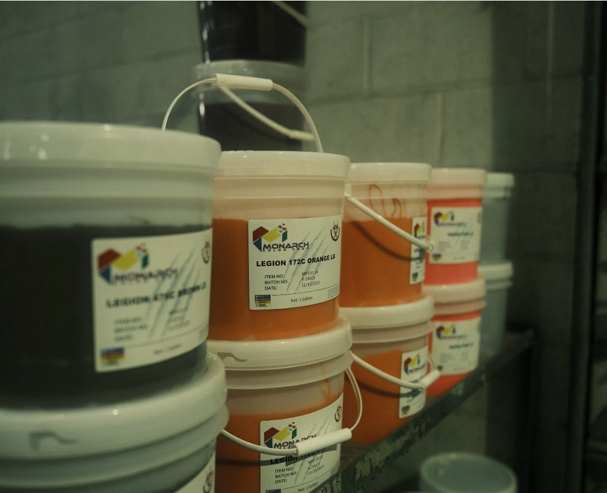

01 · The blank matters
The blank matters
Dark cotton garments are not all dyed or constructed the same way. We review the blank because the fabric helps determine how discharge will present.
Premium dark-garment printing · Nationwide service
Discharge screen printing services for custom apparel that needs a softer, garment-integrated result on appropriate dark cotton blanks. ARK reviews the garment and artwork before production, prints in Colorado Springs, and ships nationwide.
Printed in Colorado Springs · Custom orders ship nationwide

The production conversation
Discharge screen printing is a specialty approach for the right dark cotton garments. Rather than treating it like a standard ink swap, we look at the dye, fabric composition, garment color, art coverage, and the finish the project needs. Those variables influence both appearance and consistency.
That is why ARK handles discharge as a custom-quote service. The goal is not to force a discharge solution onto every dark shirt; it is to identify when it supports the design and to set a realistic production expectation before the work begins.
Choose with clarity
The process can produce a distinctive finish, but it needs a project-specific recommendation rather than a generic guarantee.
01 · The blank matters
Dark cotton garments are not all dyed or constructed the same way. We review the blank because the fabric helps determine how discharge will present.
02 · The design matters
Color count, coverage, underbase needs, and the degree of detail guide the print plan. For some dark-garment work, ARK can use a discharged underbase in the appropriate process.
03 · Expectations matter
A specialty finish should be chosen for the actual visual and hand-feel goal. We discuss the expected result before a job is approved instead of overpromising a uniform outcome.
A useful quote starts here
The fastest way to a useful recommendation is to give us the production inputs up front.
“Discharge can be an excellent finish for the right dark cotton garment. The responsible way to quote it is to evaluate the actual blank and artwork first.”The quote form is the main CTA on this page. It gives ARK the production details needed to recommend the right approach.

From brief to delivery
We use the quote details to turn a specialty-ink request into a clear production recommendation.
Questions before you quote?
Clear expectations make specialty screen printing work better. These answers cover the conversations we use to scope a project.
Discharge is a specialty screen-printing approach often considered for appropriate dark cotton garments when a softer, garment-integrated finish is part of the goal. The garment and artwork still need to be reviewed for the specific job.
The result can vary with the garment dye, fiber content, color, and construction. ARK will discuss the relevant variables rather than promising an identical result across every blank.
The artwork, garment, and intended result guide the print plan. ARK also uses a discharged underbase for suitable CMYK process work on dark garments; include your design and color expectations in the quote request so we can recommend the right method.
Appropriate dark cotton garments are typically the place to start, but the exact brand, style, color, and fiber content matter. Include the garment information in your quote request whenever possible.
Yes. ARK produces custom apparel in Colorado Springs and ships finished orders across the United States.
Use the quote form below and identify the garment, artwork, quantity, print locations, deadline, and desired finish. We will review the project before quoting the specialty work.
Start the production conversation
Share the exact dark garment, artwork, quantity, print locations, and desired finish. We will review the variables that matter before recommending a production path.